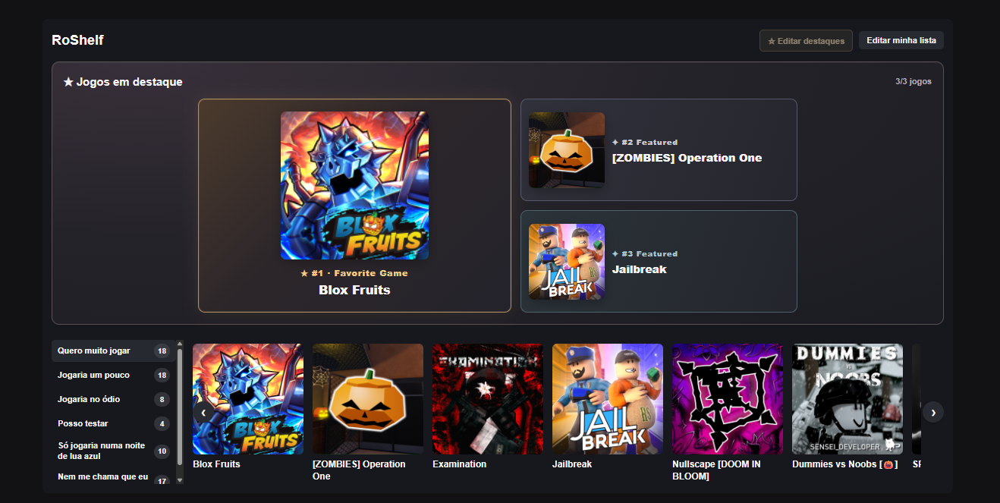

Custom categories
Create, rename and reorder categories. Give each a preference rating from 1 to 5, and keep selected categories private.
VERSION 0.13.5 · INDEPENDENT ROBLOX EXTENSION
Create custom categories, spotlight your favorite games, and compare tastes with friends — right on Roblox profiles.
Free · Chrome and Brave (desktop) · Not on the Chrome Web Store

RoShelf 0.13.5
Tools to organize, discover and share what you enjoy playing.
Create, rename and reorder categories. Give each a preference rating from 1 to 5, and keep selected categories private.
Feature up to three games. The first is your “Favorite Game”. No picks? The section stays hidden.
Find shared games and see how closely your game ratings match those of other players.
Search the entire library, filter by category and sort results without extra requests for every keystroke.
View totals, category distribution and preference ratings in a separate compact window.
Import up to 100 publicly listed games at once while skipping any already in your own library.
Private categories are excluded from public queries. Only the authenticated account can edit its content.
Click the RoShelf toolbar icon to access your game list, category settings and Roblox profile.
Move games between categories, set their order and sync changes when leaving the editor.
Chrome / Brave
RoShelf is not currently listed on the Chrome Web Store. Install it manually using Developer mode.
Click “Download RoShelf 0.13.5”. Extract the ZIP to a folder you plan to keep on your computer.
Go to chrome://extensions or brave://extensions in your browser.
Turn on “Developer mode”, select “Load unpacked”, and choose the folder containing manifest.json.
Visit roblox.com, open RoShelf and connect through the official Roblox OAuth authorization flow.
Download v0.13.5, back up the existing folder, replace the files inside that same folder, then click “Reload” in chrome://extensions. Reload Roblox. You do not need to uninstall; your online lists remain linked to your Roblox account.
RoShelf uses Roblox OAuth 2.0 for authentication and stores game classifications in a Supabase database. Please read the project documents before using it. Private categories are excluded from public queries.